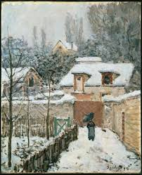

The Essence of Impressionism: Light, Color, and Brushwork
Impressionist paintings were characterized by loose brushwork, vivid colors, and an emphasis on light. Explore the gallery to appreciate the beauty of Impressionism. Hover over each artwork to see its colors brighten, revealing the play of light and color that defines this remarkable style.
Young Mother Sewing - Mary Cassatt
The Dance Class - Edgar Degas

Impression, Sunrise - Claude Monet
Water Lilies - Claude Monet
The Boulevard Montmartre at Night - Camille Pissarro
Dance at Le Moulin de la Galette - Pierre-Auguste Renoir
Flood at Port-Marly - Alfred Sisley
The Cradle - Berthe Morisot

Snow at Louveciennes - Alfred Sisley

Paris Street, Rainy Day - Gustave Caillebotte
Strolling along the Seashore - Joaquín Sorolla

The Japanese Bridge - Claude Monet